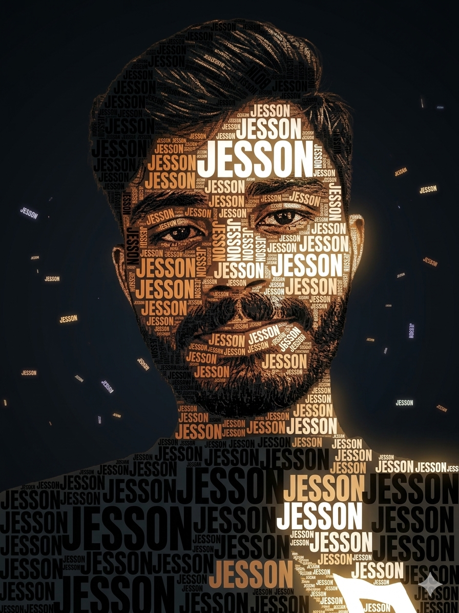

MCA Student
Learning the foundations that turn ideas into dependable software.
Available for opportunities
Aspiring Software Developer
MCA student, web developer, and digital marketing professional passionate about building useful digital experiences, learning new technologies, and turning ideas into functional software.
// THE PERSON BEHIND THE CODE
I’m an MCA student, aspiring software developer, and digital marketing professional who enjoys bringing technology, creativity, and problem-solving into the same conversation.
Professional Jesson → Creative Jesson → Developer Jesson

The journey so far
I’m pursuing a Master of Computer Applications and steadily growing into the developer I want to become — through practical websites, programming, and a genuine curiosity for how technology solves everyday problems.
My background in digital marketing gives my technical work another dimension: I think about the person on the other side of the screen, not only the code behind it.
Learning the foundations that turn ideas into dependable software.
Creating clean, responsive experiences for the web.
Bringing user awareness, creativity, and strategy to digital work.
Always exploring, building, and improving one project at a time.
My current development toolkit is growing through hands-on practice and projects.
Tools & technologies — edit as your toolkit grows
Beyond code
Digital marketing has taught me how ideas find their audience. That perspective informs how I approach every digital experience I build.
Social media marketing, campaign creation, content development, audience targeting, optimisation, lead generation, and performance analysis.
Building practical projects while strengthening programming skills and software development fundamentals.
Formal learning meets a habit of making, testing, and improving.
Currently pursuing · College and university details to add
C.A.S Konni, M.G University 2022-2025
Currently learning
What I’m working on
Building projects, improving programming fundamentals, and developing my skills as an MCA student and aspiring software developer.
✦Modern, responsive websites and web applications built around real needs.
↗Clean, user-friendly interfaces that make information easy to use.
↗Social media and digital marketing support with a user-first perspective.
↗Focused pages designed for clarity, engagement, and action.
↗GitHub & open source
Connect your profile in script.js to turn this into your GitHub home base.
A reusable space reserved for future feedback from clients, teammates, or mentors.
Add a genuine testimonial here when it arrives. The best portfolio stories are told by the people you’ve worked with.
Placeholder — replace with real feedback08 / GET IN TOUCH
Have an opportunity, idea, or simply want to connect? My inbox is open.
jessonmanoj1@gmail.com ↗